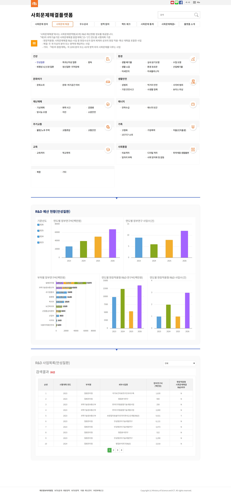
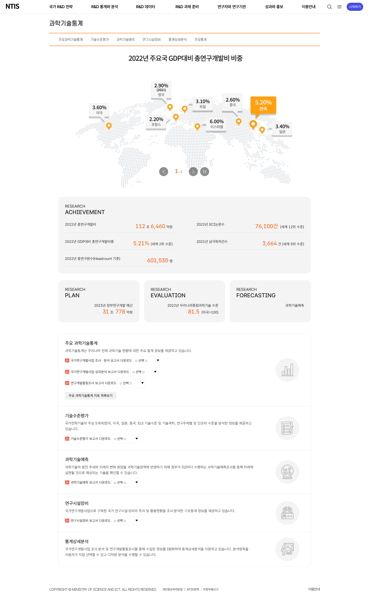
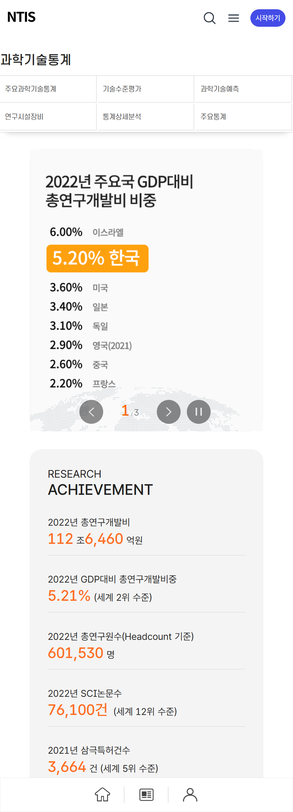
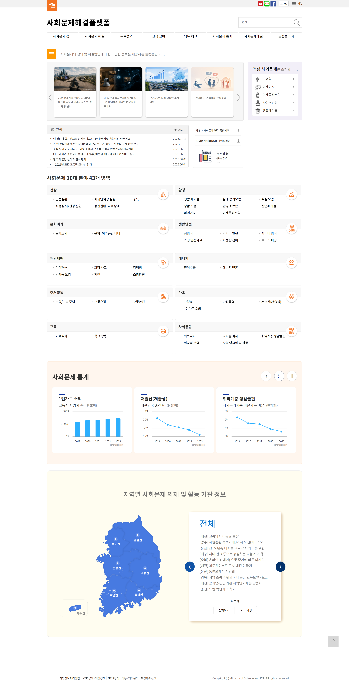
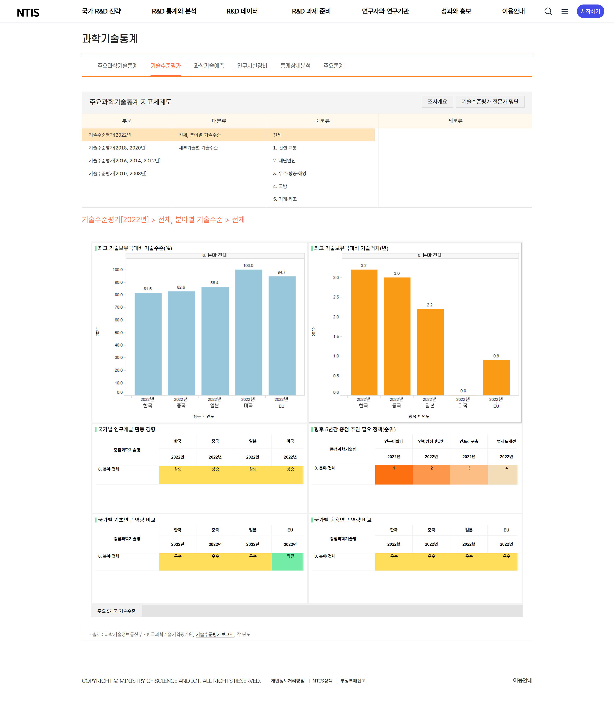
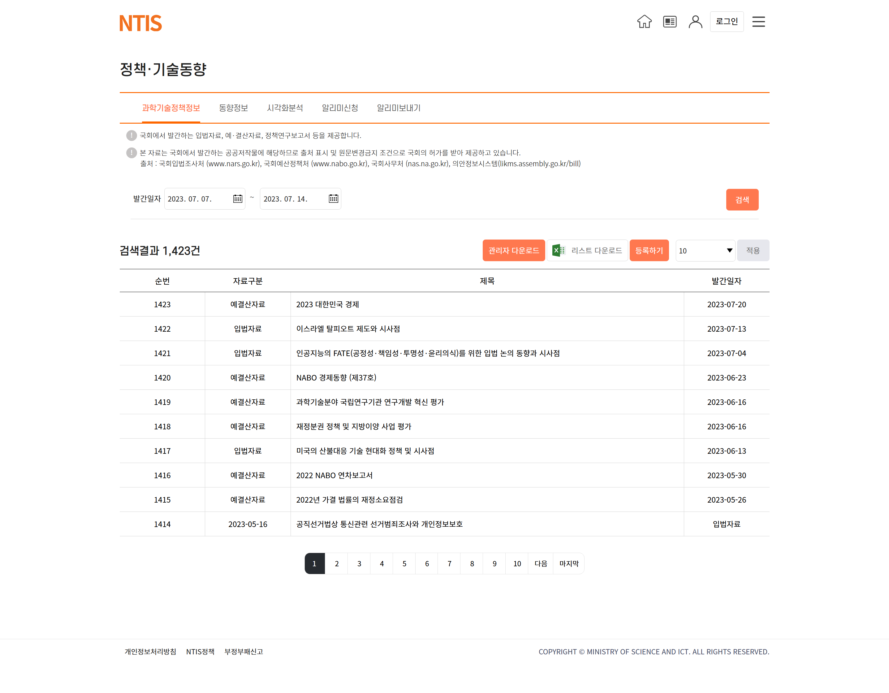

R&D DASHBOARD
R&D 미션 현황 및 데이터 목록 통합 UI
상단에 분야별 카테고리를 배치하고, 중단에는 만성질환 등 R&D 미션 현황을 다각도 막대 차트로 시각화했습니다. 하단에는 관련 R&D 사업 목록을 웹 접근성 기준에 맞춰 깔끔한 데이터 테이블 형식으로 제공합니다.
UI/UX 디자이너 이지수


상단 인포그래픽 요소를 활용해 주요국 GDP 대비 연구개발비 비중을 한눈에 파악할 수 있도록 시각화했습니다. 핵심 연구 성과 수치(연구개발비, 논문수, 특허수 등)를 대형 폰트와 카드 그리드로 정돈하고, 모바일 환경에서도 동일한 가독성과 조작 편의성을 유지하도록 반응형 웹을 구현했습니다.
사회문제 10대 분야 43개 영역을 직관적인 아이콘과 그리드로 세분화하여 복잡한 데이터를 쉽게 탐색할 수 있도록 설계했습니다. 하단에는 분야별 통계 차트와 대한민국 인터랙티브 지도를 연동하여 지역별 이슈 및 의제 현황을 대시보드 형태로 구성했습니다.

주요 과학기술통계 지표 체계도를 상단에 배치해 세부 분류 탐색을 용이하게 구축했습니다. 주요 국가별 기술수준(%) 및 기술격차(년) 데이터를 막대그래프와 컬러 범례 표로 구성하여 복잡한 연구 분석 데이터를 직관적으로 비교할 수 있도록 개선했습니다.

대용량 공공 데이터의 가독성을 극대화하고 업무 효율성을 높이기 위해 구축된 주요 서브 페이지 UI 레이아웃입니다.

상단에 분야별 카테고리를 배치하고, 중단에는 만성질환 등 R&D 미션 현황을 다각도 막대 차트로 시각화했습니다. 하단에는 관련 R&D 사업 목록을 웹 접근성 기준에 맞춰 깔끔한 데이터 테이블 형식으로 제공합니다.

국회 및 관련 기관의 입법·예결산 자료를 기간별로 용이하게 조회할 수 있도록 검색 필터를 상단에 고정했습니다. 검색 결과 건수 표시, 관리자 다운로드, 엑셀 리스트 추출 기능 등 유틸리티 버튼을 정돈하여 이용 편의성을 극대화했습니다.